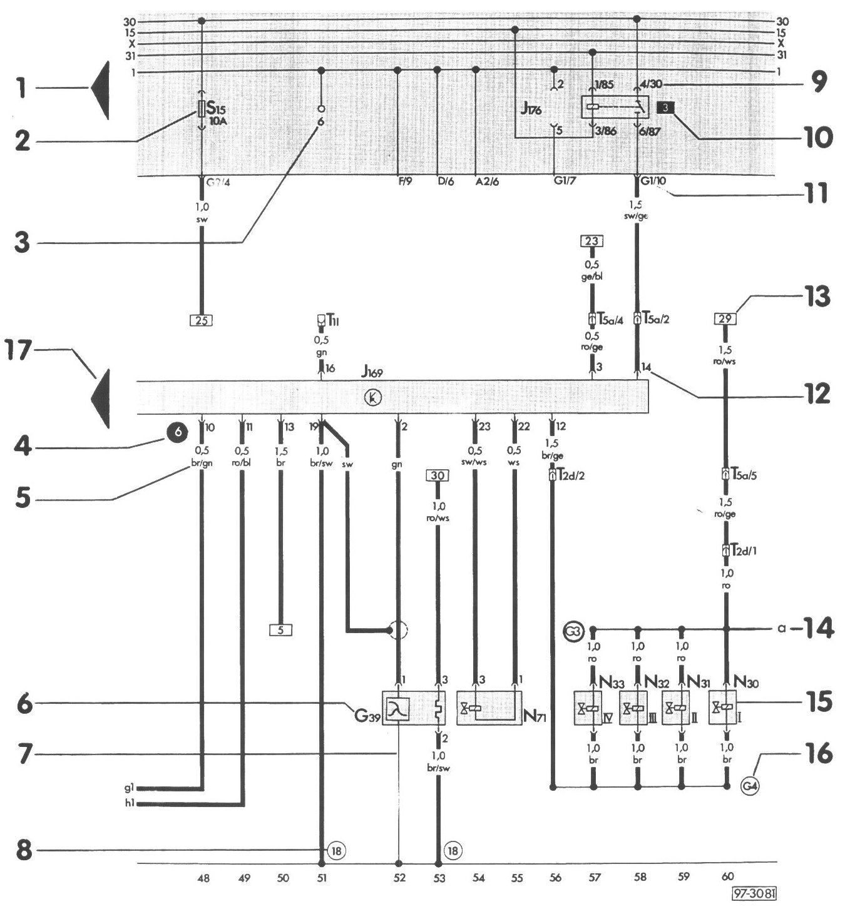

How to Read Wiring Diagrams
How To Read Displayed Page of Wiring Diagram

1 - Arrow
Indicates wiring circuit is continued on the previous and/or next page.
2 - Fuse designation
For example: S15 = Fuse number 15, 10 amps, in fuse/ relay panel.
3 - Test points on fuse/relay panel
4 - Test points used during troubleshooting
Numbers in black circles may be found in a regular wiring diagram or in a wiring diagram included with troubleshooting.
5 - Wire cross-section size (in mm sq.) and wire colors
See "Wire Size Conversion Chart" for wire size conversion to American Wire Gauge (AWG). Wire color abbreviations are explained in color code chart on each page of the wiring diagram.
6 - Component designation (code)
Use legend at bottom of page to identify the component code.
7 - Internal connections (thin lines)
These connections are not always wires. Internal connections are current carrying and are listed to allow tracing of current flow inside components and wiring harnesses.
8 - Wire harness ground connection
Locations of ground connections are indicated in the legend.
9 - Relay/control module connectors on fuse/relay panel
Shows the individual terminals in a multi-point connector.
Example: 4/30
4 = contact 4 at location 3 on relay panel or relay carrier
30 = terminal 30 (B+) on relay/control module
10 - Relay location number
Indicates relay location on fuse/relay panel.
11 - Fuse/relay panel connectors
Shows wiring of multi-point or single connectors on fuse/relay panel.
Example: G1/10 = multi-point connector G1, terminal 10
12 - Terminal designation
Designation which appears on actual component and/or terminal number of a multi-point connector.
13 - Wire continuation (current track number)
Number in frame indicates current track where wire is continued.
14 - Continuation of internal connections
Letters indicate where connection continues on the previous and/or next page.
15 - Component symbols
See "Symbol Identification".
16 - Wiring harness wire connection
Locations of wire connections are indicated in the legend.
17 - Arrow
Indicates component is continued on previous and/or next diagram.